Harbor Freight
A rebrand for people who fix, build, and solve problems.
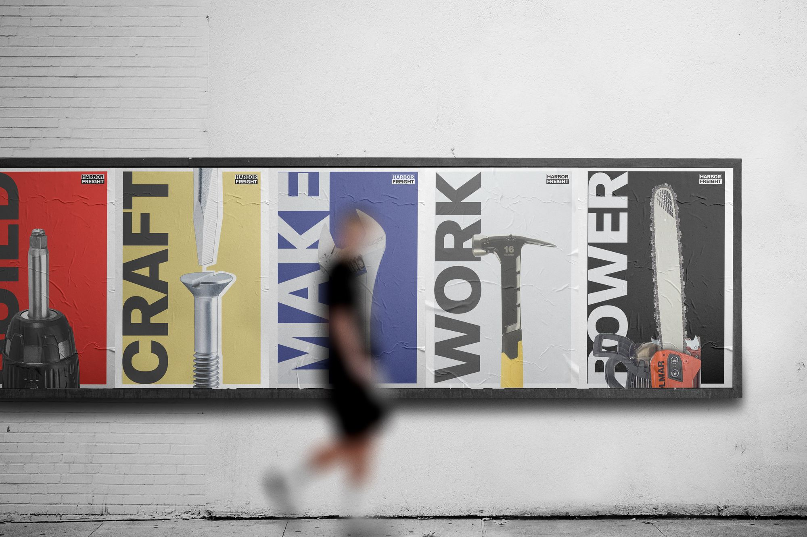
Keeping the industrial boldness contractors trust, while welcoming a new audience of makers.
Harbor Freight’s perception of “cheapness” and its cluttered retail experience have long limited what the brand truly represents.
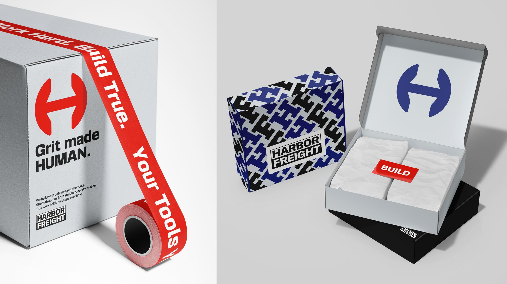
A clearer, more organized store environment and workshop experience for non-professional makers.
Store & Workshop
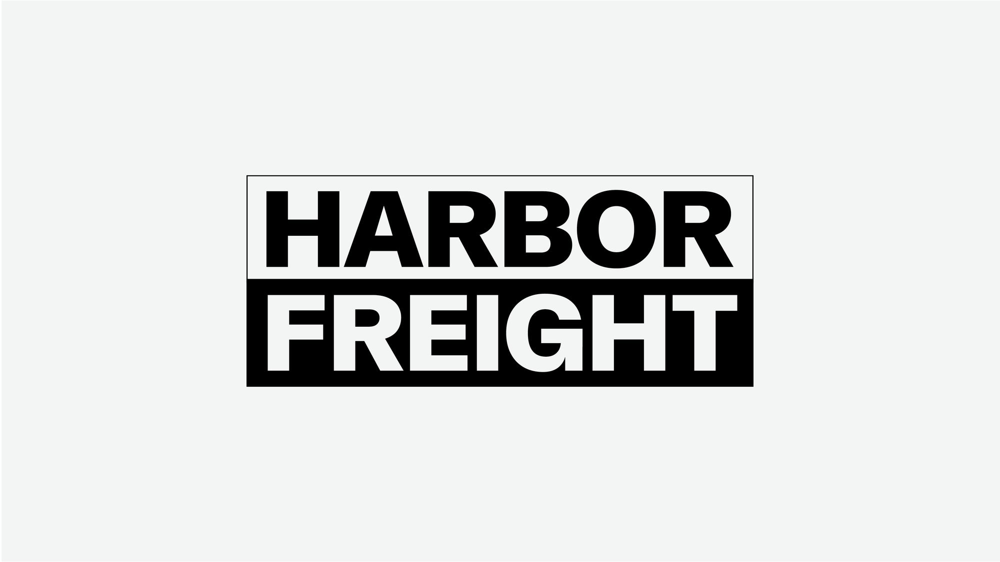
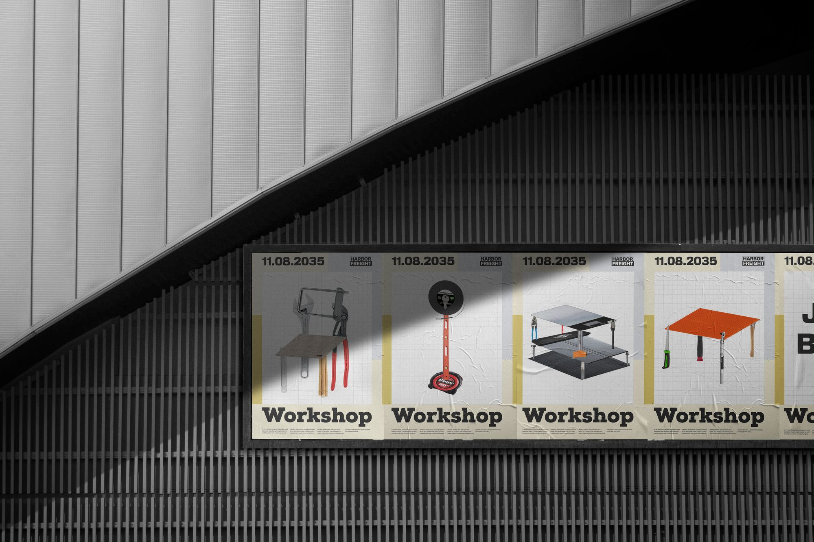
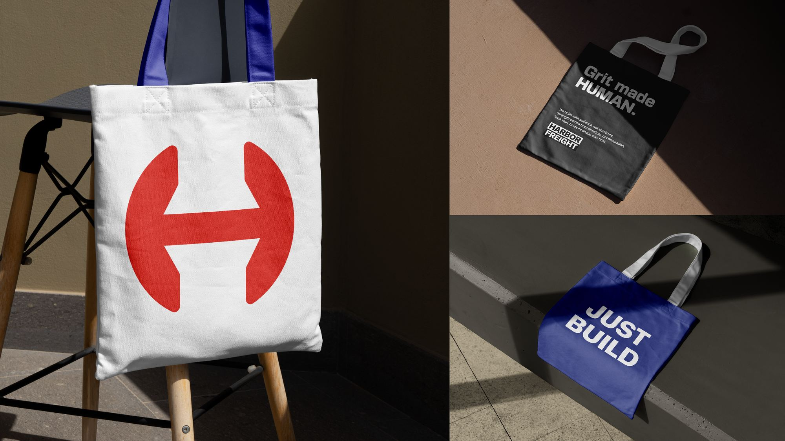
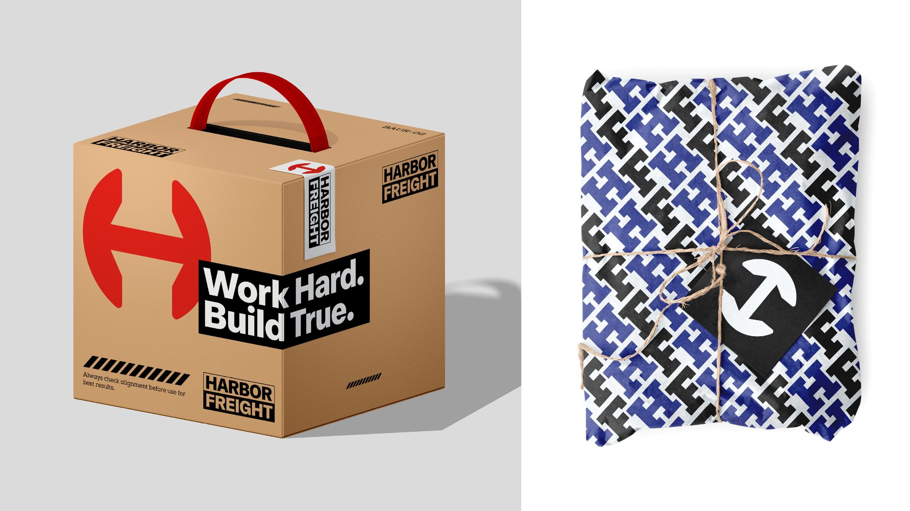
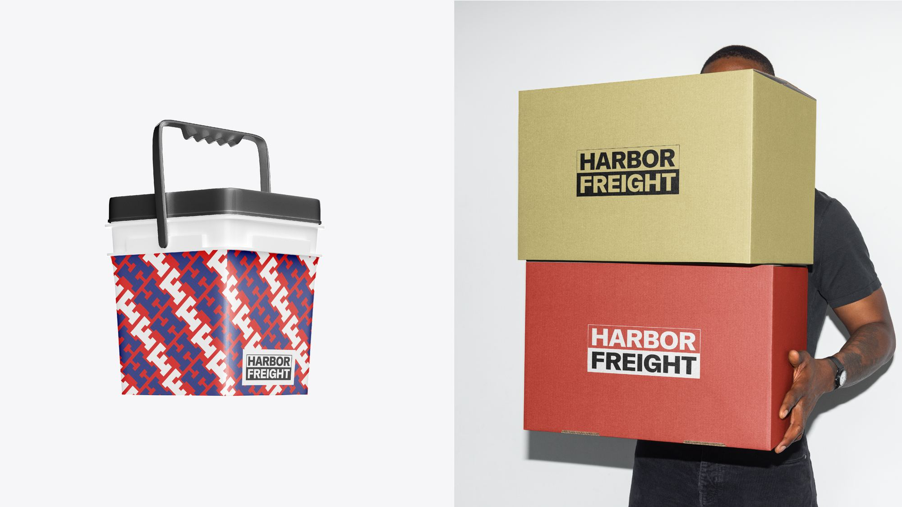
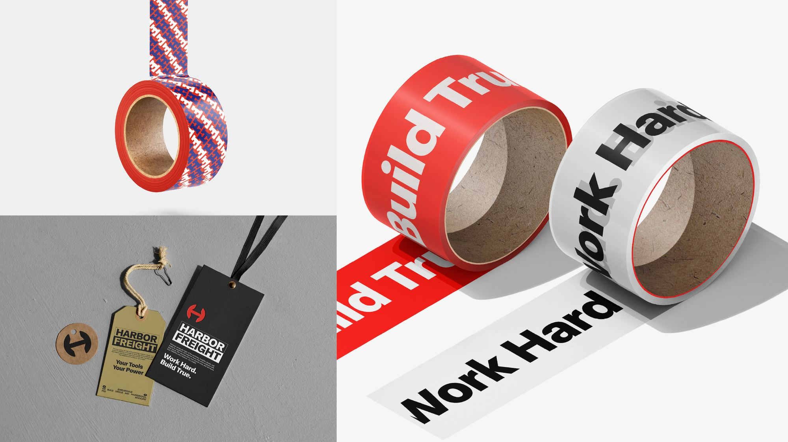
A structured, bold visual language that expresses fixing, building, and solving with intention.
Visual Language
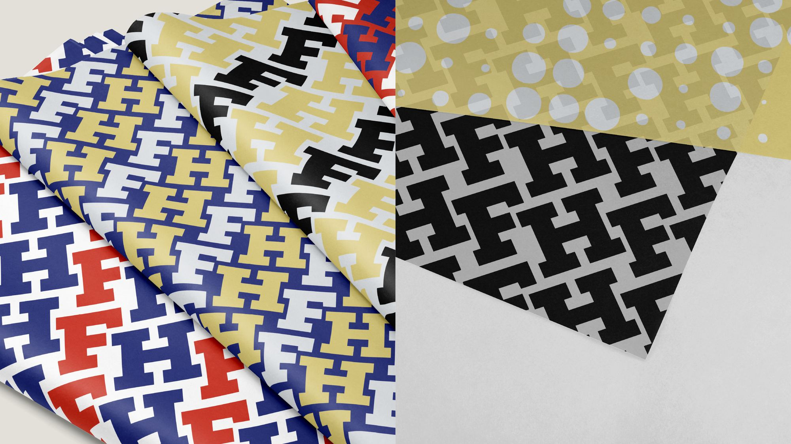
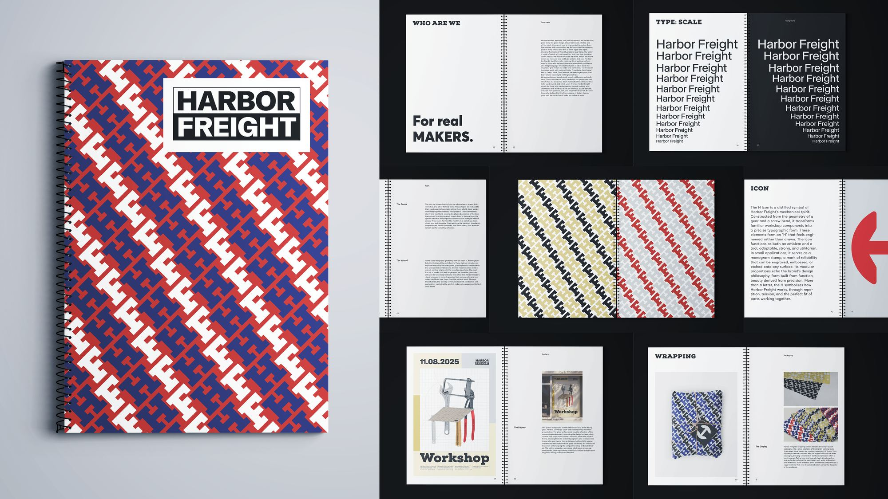
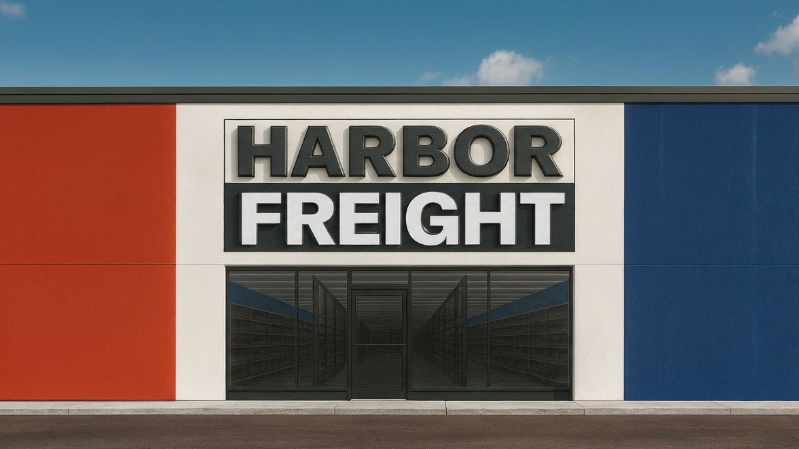
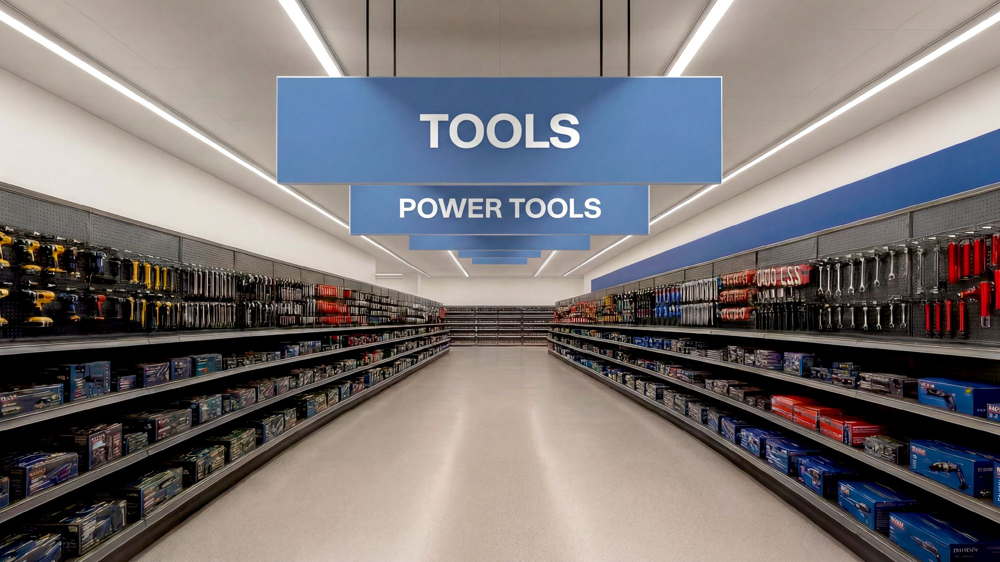
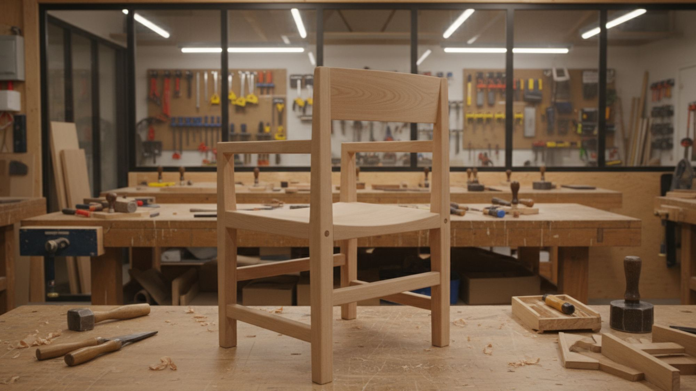
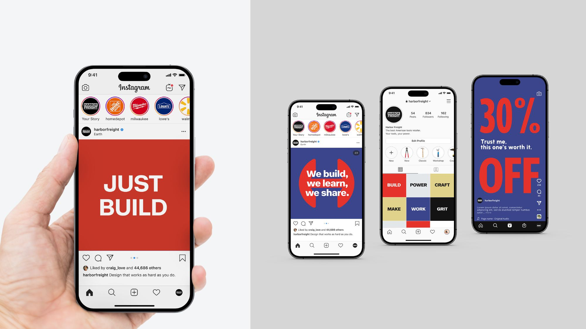
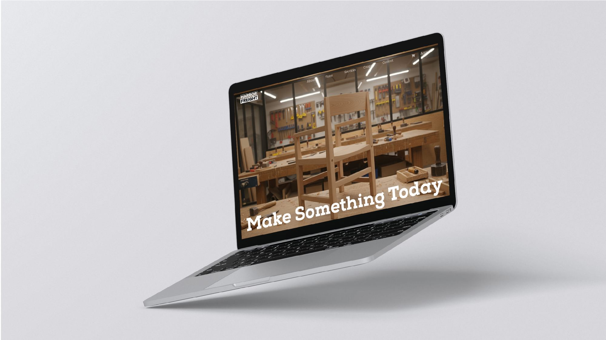
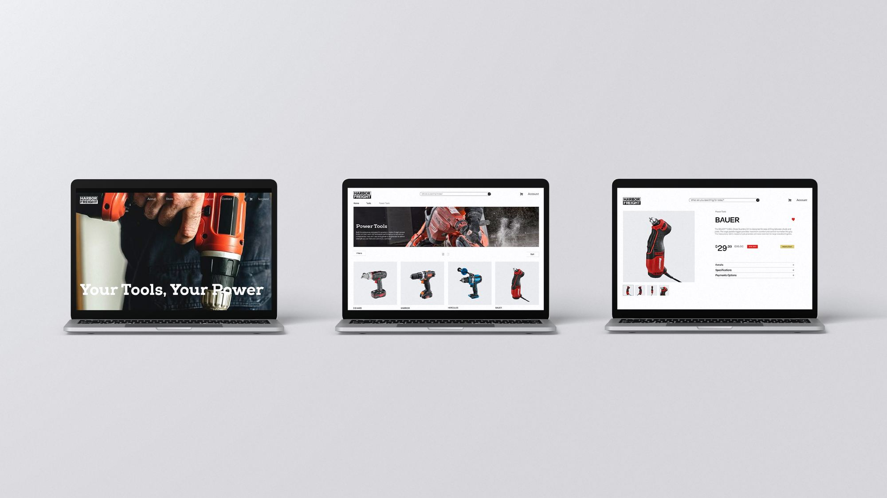
Project description
Harbor Freight is a practical tool brand built for people who fix, build, and solve problems. However, its perception of “cheapness” and its cluttered retail experience have long limited what the brand truly represents.
This rebrand strategy preserves the industrial boldness that contractors trust, while introducing a clearer and more organized store environment and workshop experience to welcome a new audience: non-professional makers.
What sets Harbor Freight apart is its methodical, reliable, work-driven character, engineered to support anyone determined to make something that lasts. Through a structured and bold visual language, the rebrand brings that forward, expressing Harbor Freight’s spirit of fixing, building, and solving with intention.